Ma
Japanese minimalism — stillness, generous space and a single indigo note.
- Best for
- design and architecture talks, philosophy and humanities, mindful or wellbeing topics, portfolio reviews
- Avoid for
- dense data reviews, high-energy launches
- Typefaces
- Shippori Mincho · Zen Kaku Gothic New · IBM Plex Mono
- Feel
- calm, minimal, refined, contemplative · light · calm motion
- bg
#EEEBE4 - ink
#262522 - accent
#2B4A73
Ask Claude for it by name:
Make a presentation about … in the Ma themeAll 33 slides in Ma
Every layout from the showcase lecture. Click a frame to open it in the live deck.

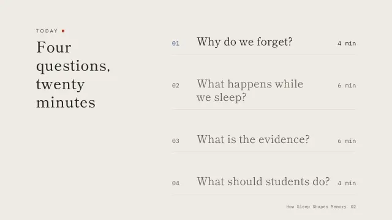
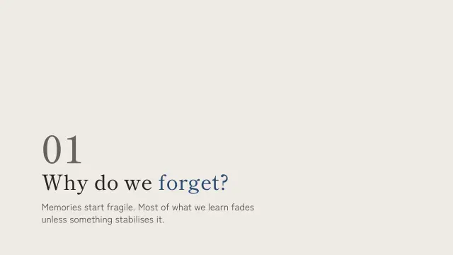
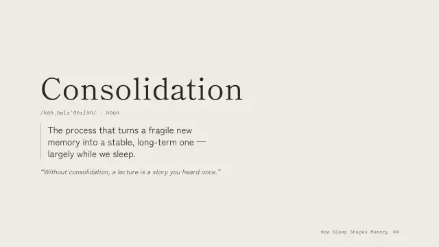
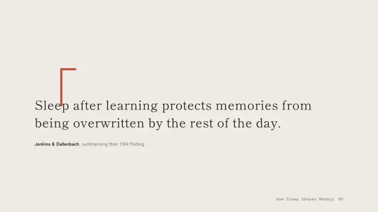
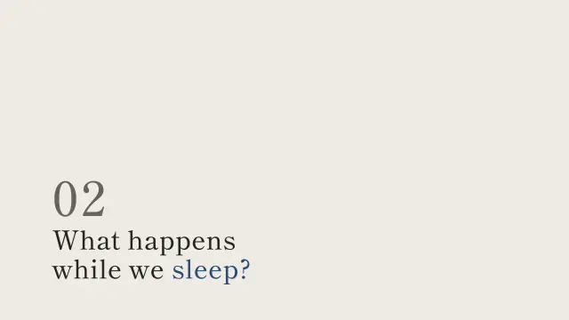

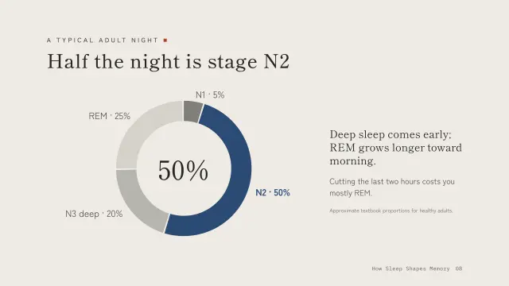
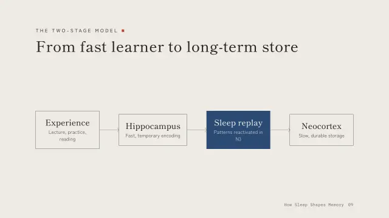
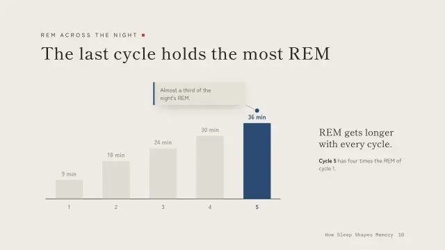
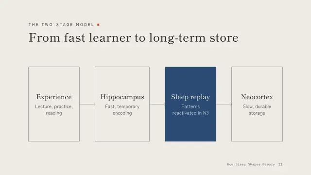
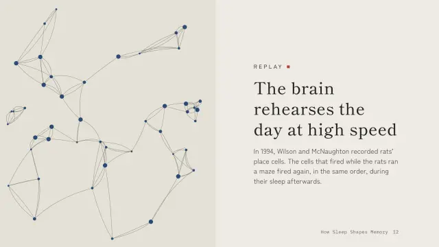
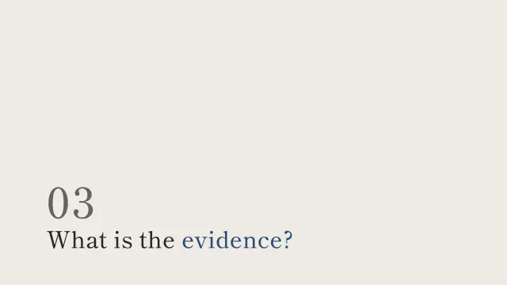
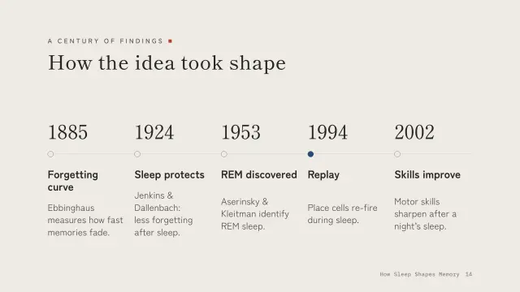

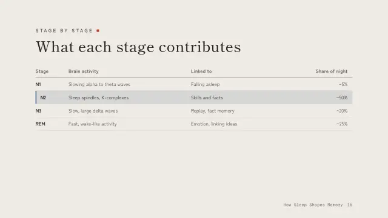
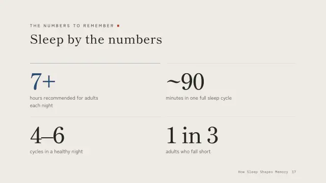
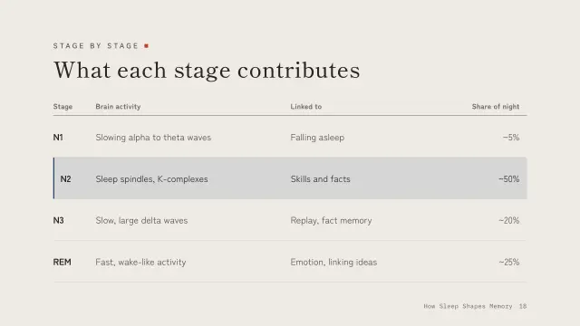
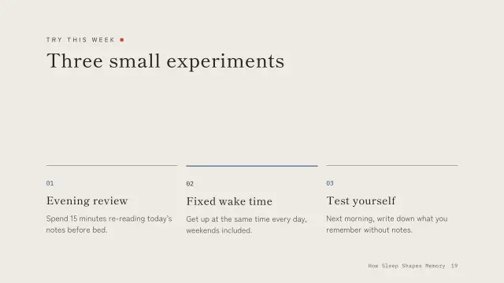
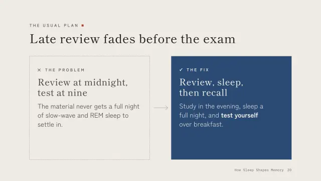
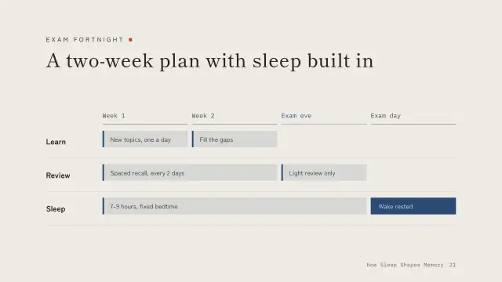
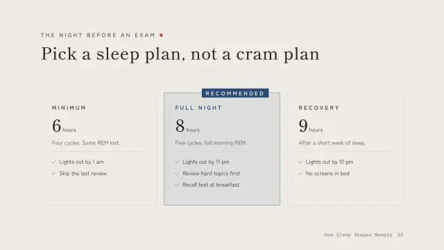
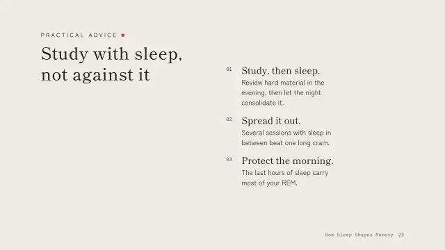
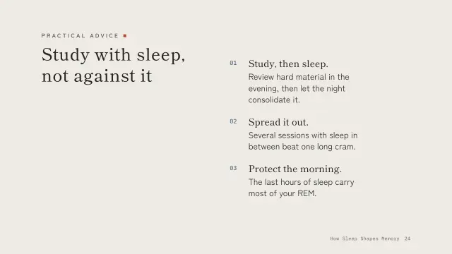
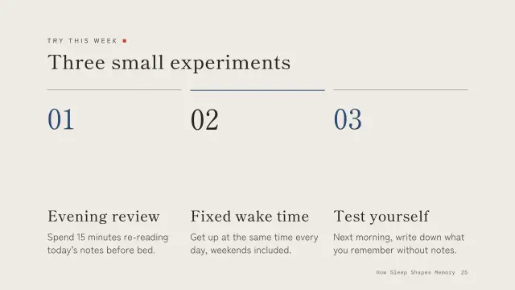
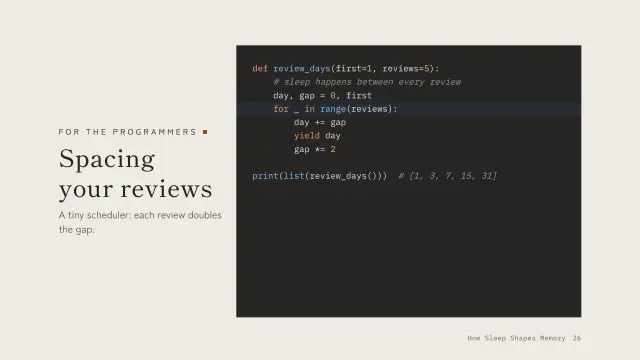

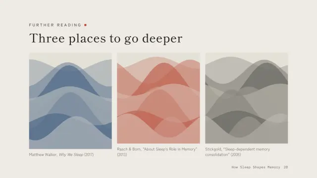
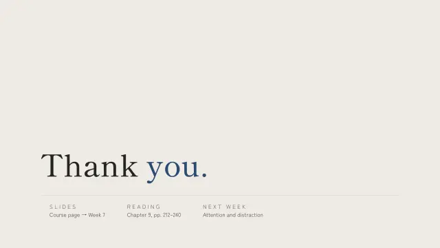
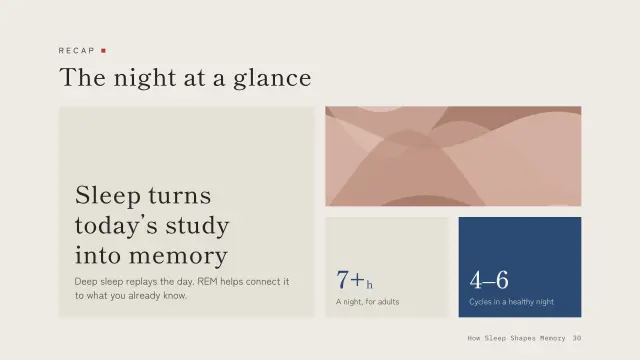
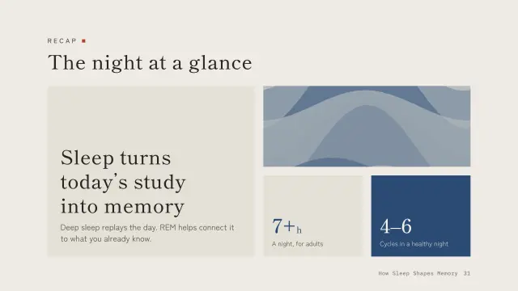